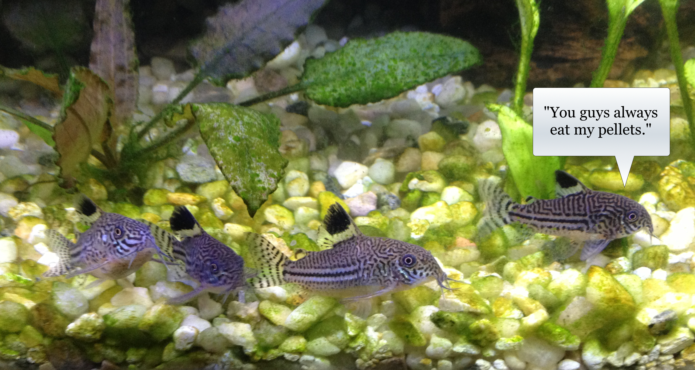
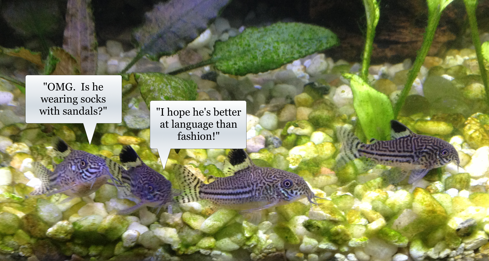
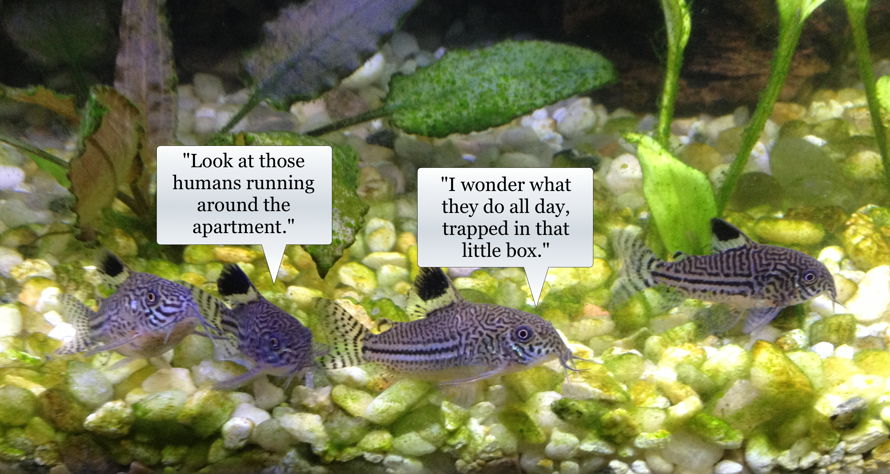
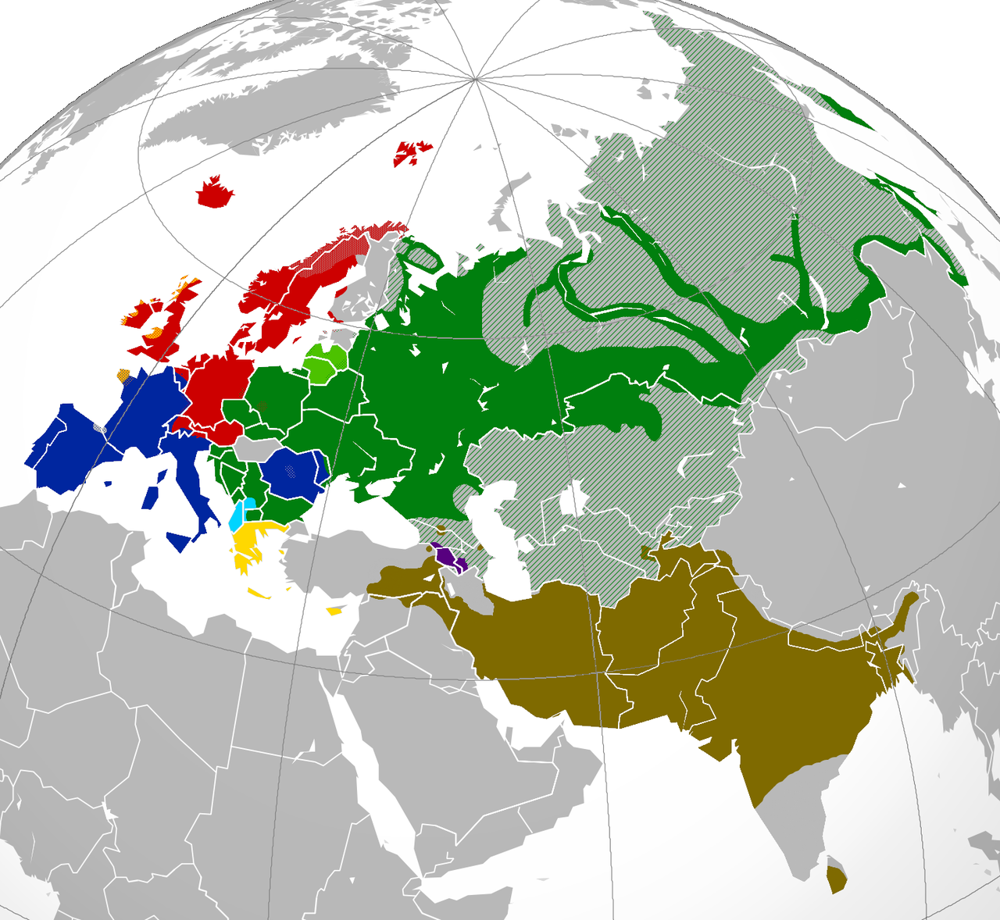
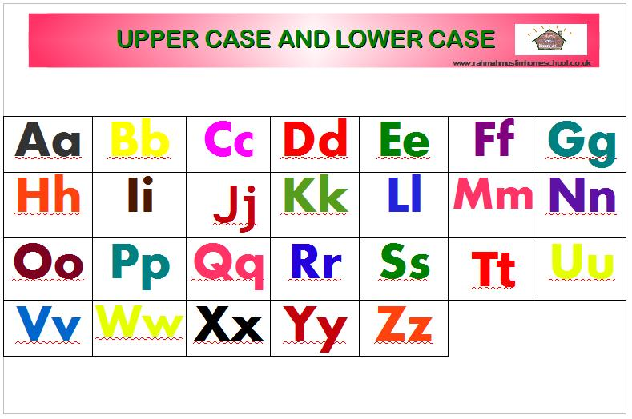

<lang>Russian</lang><br><ldata>IE:Slavic - Russia</ldata> Света - Дорога в аэропорт (feat. KRP) (Sveta - Doroga v aeroport, 'Approaching the airport') --- # #crappypuns I hate Russian stacking dolls. They're so full of themselves. --- # Russian, Slavic, and the Beauty of Case ### LING 1020 - Will Styler --- ## Today's Agenda * Person and number labels * Slavic Languages * Russian * Grammatical Relations * The Beauty of Case * Why translating Dostoevsky is really, really tough --- # We've got a lot of ground to cover today! * (Sorry!) --- # 1sg? 3pl!? 2sg?!?! WTF Linguists!! --- ### Person and number labels Linguistic shorthand to refer to participants in conversation --- People are usually talking to somebody, about themselves and others. --- --- ### First person Refers to the speaker (and his/her group) --- ### First person singular (1sg) <img src="img/corydoras1sg.jpg"> --- ### First person plural (1pl) <img src="img/corydoras1pl.jpg"> --- ### Second person Referring to the listener(s) --- ### Second person singular (2sg) <img src="img/corydoras2sg.jpg"> --- ### Second person singular (2pl)  --- ### Third person Referring to somebody outside the conversation --- ### Third person singular (3sg)  --- ### Third person plural (3pl)  --- ### Person and Number shows up everywhere! * Pronouns * Verb conjugations * Case markers * Adjectives (sometimes) * Changing something to match the person/number is called "agreement" --- ### English pronouns <center> <style type="text/css"> .tg {border-collapse:collapse;border-spacing:0;} .tg td{font-family:Arial, sans-serif;padding:10px 5px;border-style:solid;border-width:1px;overflow:hidden;word-break:normal;} .tg th{font-family:Arial, sans-serif;font-weight:normal;padding:10px 5px;border-style:solid;border-width:1px;overflow:hidden;word-break:normal;} .tg .tg-e3zv{font-weight:bold} </style> <table class="tg"> <tr> <th class="tg-031e"></th> <th class="tg-e3zv">Singular</th> <th class="tg-e3zv">Plural</th> </tr> <tr> <td class="tg-e3zv">1st</td> <td class="tg-031e">I</td> <td class="tg-031e">we</td> </tr> <tr> <td class="tg-e3zv">2nd</td> <td class="tg-031e">you</td> <td class="tg-031e">y'all</td> </tr> <tr> <td class="tg-e3zv">3rd</td> <td class="tg-031e">he/she</td> <td class="tg-031e">they</td> </tr> </table> </center> --- ### Spanish pronouns <center> <style type="text/css"> .tg {border-collapse:collapse;border-spacing:0;} .tg td{font-family:Arial, sans-serif;padding:10px 5px;border-style:solid;border-width:1px;overflow:hidden;word-break:normal;} .tg th{font-family:Arial, sans-serif;font-weight:normal;padding:10px 5px;border-style:solid;border-width:1px;overflow:hidden;word-break:normal;} .tg .tg-e3zv{font-weight:bold} </style> <table class="tg"> <tr> <th class="tg-031e"></th> <th class="tg-e3zv">Singular</th> <th class="tg-e3zv">Plural</th> </tr> <tr> <td class="tg-e3zv">1st</td> <td class="tg-031e">Yo</td> <td class="tg-031e">Nosotros</td> </tr> <tr> <td class="tg-e3zv">2nd</td> <td class="tg-031e">Tu/Usted</td> <td class="tg-031e">Vosotros/Ustedes</td> </tr> <tr> <td class="tg-e3zv">3rd</td> <td class="tg-031e">El/Ella</td> <td class="tg-031e">Ellos</td> </tr> </table> </center> --- ### English Verb forms for "Judge" <center> <style type="text/css"> .tg {border-collapse:collapse;border-spacing:0;} .tg td{font-family:Arial, sans-serif;padding:10px 5px;border-style:solid;border-width:1px;overflow:hidden;word-break:normal;} .tg th{font-family:Arial, sans-serif;font-weight:normal;padding:10px 5px;border-style:solid;border-width:1px;overflow:hidden;word-break:normal;} .tg .tg-e3zv{font-weight:bold} </style> <table class="tg"> <tr> <th class="tg-031e"></th> <th class="tg-e3zv">Singular</th> <th class="tg-e3zv">Plural</th> </tr> <tr> <td class="tg-e3zv">1st</td> <td class="tg-031e">I judge.</td> <td class="tg-031e">We judge.</td> </tr> <tr> <td class="tg-e3zv">2nd</td> <td class="tg-031e">You judge.</td> <td class="tg-031e">Y'all judge.</td> </tr> <tr> <td class="tg-e3zv">3rd</td> <td class="tg-031e">He judges.</td> <td class="tg-031e">They judge.</td> </tr> </table> </center> --- ### Spanish Verb forms for "Judge" <center> <style type="text/css"> .tg {border-collapse:collapse;border-spacing:0;} .tg td{font-family:Arial, sans-serif;padding:10px 5px;border-style:solid;border-width:1px;overflow:hidden;word-break:normal;} .tg th{font-family:Arial, sans-serif;font-weight:normal;padding:10px 5px;border-style:solid;border-width:1px;overflow:hidden;word-break:normal;} .tg .tg-e3zv{font-weight:bold} </style> <table class="tg"> <tr> <th class="tg-031e"></th> <th class="tg-e3zv">Singular</th> <th class="tg-e3zv">Plural</th> </tr> <tr> <td class="tg-e3zv">1st</td> <td class="tg-031e">Juzgo.</td> <td class="tg-031e">Juzgamos.</td> </tr> <tr> <td class="tg-e3zv">2nd</td> <td class="tg-031e">Juzgas.</td> <td class="tg-031e">Juzgáis.</td> </tr> <tr> <td class="tg-e3zv">3rd</td> <td class="tg-031e">Juzga.</td> <td class="tg-031e">Juzgan.</td> </tr> </table> </center> --- ### Person and number are really important! So, when it's marked, we linguists write it down. * That's why you'll see "1sg", "2pl", "3sg" all over! --- ## "Isn't today about Russian?" <img class="big" src="humorimg/quizzicaldog.jpg"> --- (OK, OK, let's talk Slavic!) --- <img class="big" src="lotwimg/indoeuropean.gif"> --- ### Slavic  (in green) --- ### Features of Slavic Languages * Rich Case Systems * Cyrillic Writing System * Complex Consonant Clusters --- ### Slavic Languages * Polish * Belorussian * Ukrainian * Czech * Slovak * Bulgarian * Macedonian * Sorbian * Bosnian/Serbian/Croatian/Montenegrin * Russian --- <lang>Russian</lang><br><ldata>IE:Slavic - Russia</ldata> <iframe data-autoplay width="840" height="690" src="http://www.youtube.com/embed/TTe225bgCKA"></iframe> --- ## Russian and I go way back... <img class="big" src="humorimg/redoctober.jpg"> --- # Why I love Russian --- ### The sound system is awesome --- ### The writing system doesn't suck * (Yes, English, the truth hurts) --- ### Cyrillic Writing System <img class="big" src="img/cyrillic.gif"> --- ### Cyrillic is used in: * *Slavic* - Russian, Bulgarian, Macedonian, Russian, Rusyn, Serbian, Bosnian, Montenegrin, Ukrainian * *Non-Slavic* - Abkhaz, Bashkir, Chuvash, Erzya, Kazakh, Kildin Sami, Komi, Kyrgyz, Mari, Moksha, Mongolian, Ossetic, Sakha/Yakut, Tajik, Tatar, Tuvan, Udmurt, Yuit --- ### Transliteration Writing a language using a non-native writing system --- **достопримечательности москвы** (dostoprimechatelnosti moskviy) 'Places of interest in Moscow' <danger>We will transliterate in this class, but we are bad people for doing it, and should feel bad</danger> <!-- .element: class="fragment" --> --- ### Different motion verbs depending on method of movement and return * Ходить (hodit) - To go by walking (there and back) * Идти (idti) - To go by walking (one way, progressive) * Ездить (yezdit) - To go by transport (there and back) * Ехать (yekhat) - To go by transport (one way, progressive) --- ### Prefixes for motion verbs * У- - "From, away" * 'Я улетаю в ночь' - "I'm flying away tonight" * 'Уходить' - "Go away" * Об- - "Around" * 'Я oблетаю' - "I'm flying around (a city)" * 'Oбходить' - "To walk around" * С- - "Down from" * 'Я схожу с ума' - "I'm going crazy" --- ### Two words for "blue" <h1 style="color:blue">Синий</h1> <h1 style="color:cyan">Голубой</h1> --- ### The Case System! --- ## "Case System?" <img class="big" src="lotwimg/pelicancases.jpg"> --- ## "Case System?"  --- Let's back up for a second. --- ### "Jony chased Dieter" <img class="big" src="img/fish_jonydieter.jpg"> --- ## "How do we know who did what to whom?" --- ### Grammatical Relations How a language marks who did what to whom --- ### English uses word order to mark grammatical relations. * "Jony chased Dieter" * "Kevin waved to Niloo" * "Niloo waved to Kevin" * "Will ate his tofu wistfully" --- ### ... but that's not the only way! --- ### Morphemes The smallest unit of a word which has meaning in a language * *Jony ate Dieter**'s** food pellet**s*** * *I am sing**ing** in the rain* --- ### Russian tacks morphemes onto words to mark grammatical relations * We call these morphemes "case markers" * Nominative Case - "The Subject" * Accusative Case - "The Object" --- ### Grammatical Case Tacking morphemes onto words to indicate their role in the sentence --- ### Russian Case Marking * Soboka videt kochku * dog-NOM see-3sg CAT-ACC * "The dog saw the cat" * Kochka videt sobaku * cat-NOM see-3sg dog-ACC * "The cat saw the dog" --- ### Russian Case Marking * Ya tebya vizhu * I-NOM you-ACC-INF see-1sg * "I see you" * Ti menya videsh * You-NOM I-ACC see-2sg * "You see me" --- <section data-background="img/clickerbkgrnd.png"></section> If we put the sentence "Niloo hugged the turtle" into Russian, the proper cases would be... A) Niloo - NOM, Turtle - ACC B) Niloo - ACC, Turtle - NOM C) Niloo - NOM, Turtle - NOM D) Niloo - ACC, Turtle - ACC --- <section data-background="img/clickerbkgrnd.png"></section> If we put the sentence "Niloo hugged the turtle" into Russian, the proper cases would be... <correct>A) Niloo - NOM, Turtle - ACC</correct> B) Niloo - ACC, Turtle - NOM C) Niloo - NOM, Turtle - NOM D) Niloo - ACC, Turtle - ACC --- ***Nominative and Accusative cases are really common!*** --- <lang>German</lang><br><ldata>IE:Germanic - Germany</ldata> * Der Hund beißt den Mann. * The-NOM dog bite-3sg the-ACC man. * 'The dog bites the man.' * Der Mann beißt den Hund. * The-NOM man bite-3sg the-ACC dog. * 'The man bites the dog.' --- <lang>English</lang><br><ldata>IE:Germanic - All over</ldata> <center> <style type="text/css"> .tg {border-collapse:collapse;border-spacing:0;} .tg td{font-family:Arial, sans-serif;font-size:24px;padding:10px 5px;border-style:solid;border-width:1px;overflow:hidden;word-break:normal;} .tg th{font-family:Arial, sans-serif;font-size:24px;font-weight:normal;padding:10px 5px;border-style:solid;border-width:1px;overflow:hidden;word-break:normal;} .tg .tg-e3zv{font-weight:bold} </style> <table class="tg"> <tr> <th class="tg-031e"></th> <th class="tg-e3zv">Singular Nominative</th> <th class="tg-e3zv">Plural Nominative</th> <th class="tg-e3zv">Singular Accusative</th> <th class="tg-e3zv">Plural Accusative</th> </tr> <tr> <td class="tg-e3zv">1st</td> <td class="tg-031e">I</td> <td class="tg-031e">we</td> <td class="tg-031e">me</td> <td class="tg-031e">us</td> </tr> <tr> <td class="tg-e3zv">2nd</td> <td class="tg-031e">you</td> <td class="tg-031e">y'all</td> <td class="tg-031e">you</td> <td class="tg-031e">y'all</td> </tr> <tr> <td class="tg-e3zv">3rd</td> <td class="tg-031e">he/she</td> <td class="tg-031e">they</td> <td class="tg-031e">him/her</td> <td class="tg-031e">them</td> </tr> </table> </center> --- <lang>English</lang><br><ldata>IE:Germanic - All over</ldata> * I see him * I-NOM see he-ACC * He sees me * He-NOM see-3sg I-NOM --- <lang>Geonosian</lang><br><ldata>??? - Geonosis</ldata> <img class="big" src="img/geonosian.jpg"> --- So, Nominative and Accusative cases are really useful! --- ### ... but Russian has more cases! --- ## The Russian Case System * Nominative Case - "The Subject" * Accusative Case - "The Direct Object" * Dative Case - "The Indirect Object or Recipient" * Genitive Case - "The Possessor" * Locative Case - "The Location" * Instrumental Case - "The Tool" --- ### Dative Case Marks the indirect object, or recipient of an item --- ### Dative Case * Kevin dayot tsveti Lisye * Kevin-NOM give-3sg Flowers-ACC-PLUR Lisa-DAT * "Kevin gave Lisa flowers" * Enchiladi mne dala Niloo * Enchilada-ACC-PLUR 1sg-DAT give-PAST-FEM Niloo-NOM * "Niloo gave me Enchiladas" --- ### Dative as "Goal" * Ya pomogayu Kevinu * 1sg-NOM help-present.1sg Kevin-DAT * "I'm helping Kevin" * Mne zvonil Barack Obama * 1sg-DAT call-past.masc Barack Obama * "Barack Obama called me" --- <section data-background="img/clickerbkgrnd.png"></section> If we put the sentence "Jony gave Dieter some pellets" into Russian, the proper cases would be... A) Jony - ACC, Dieter - DAT, Pellets - NOM B) Jony - NOM, Dieter - DAT, Pellets - ACC C) Jony - NOM, Dieter - ACC, Pellets - DAT D) Jony - DAT, Dieter - ACC, Pellets - NOM --- <section data-background="img/clickerbkgrnd.png"></section> If we put the sentence "Jony gave Dieter some pellets" into Russian, the proper cases would be... A) Jony - ACC, Dieter - DAT, Pellets - NOM <correct>B) Jony - NOM, Dieter - DAT, Pellets - ACC</correct> C) Jony - NOM, Dieter - ACC, Pellets - DAT D) Jony - DAT, Dieter - ACC, Pellets - NOM --- ### Genitive Case Marks possession --- ### Genitive Case in Action * Ya vizhu sharik Ponga * 1sg-NOM see-1sg ball-ACC Pongo-GEN * "I see Pongo's ball" * Michael Bay samaya bolshaya problema Amerikiy * Michael Bay single-NOM large-NOM problem-NOM America-GEN * "Michael Bay is America's biggest problem" --- <section data-background="img/clickerbkgrnd.png"></section> If we put the sentence "Will stole the dragon's iPad" into Russian, the proper cases would be... A) Will - ACC, Dragon - NOM, iPad - GEN B) Will - NOM, Dragon - GEN, iPad - ACC C) Will - GEN, Dragon - ACC, iPad - NOM D) Will - NOM, Dragon - ACC, iPad - GEN --- ### Locative Case Marks the location of events * (this is also called the "Prepositional Case") --- ### Locative Case in action * Ya zhivu v Broomfielde * 1sg-NOM live-1sg in Broomfield-LOC * "I live in Broomfield" * Pongo hochet byt na dvore * Pongo-NOM want-3sg be in outdoors-LOC * "Pongo wants to be outside" --- ### Instrumental Case Marks an object being used --- ### Instrumental Case in Action * Niloo pishet karandashom * Niloo-NOM write-3sg pencil-INST * "Niloo writes with a pencil" * Ya yem borscht so smetanoy * 1sg-NOM eat borscht-ACC with sour.cream-INST * "I eat borscht with sour cream" --- # So... --- ## The Russian Case System * Nominative Case - "The Subject" * Accusative Case - "The Direct Object" * Dative Case - "The Indirect Object or Recipient" * Genitive Case - "The Possessor" * Locative Case - "The Location" * Instrumental Case - "The Tool" --- (OK, relax, we're done with the heavy stuff) --- English can handle Nominative and Accusative. * ... but Dative? We just can't even. --- This is a problem for translators. --- <img class="big" src="lotwimg/dostoevsky.jpg"> --- <img class="big" src="lotwimg/crimeandpunishment.jpg"> ("Crime and Punishment") --- # "упокой господь мертвых, а живым еще жить!" (Upokoy gospod myotvikh, a zhivim eshyo zhit!) --- *Upokoy gospod myotvikh, a zhivim eshyo zhit* * out-rest-IMP God-NOM dead-ACC, but living-DAT still to.live * “God give peace to the dead, the living have still to live!” - Constance Garnett * “May the Lord grant rest to the souls of the dead, and let life be the realm of the living!” - David McDuff * "May the Lord grant rest to the dead, but the living have still got to live!" - Pevear and Volokhonsky --- ### This isn't just a problem for English * "Que el Señor dé paz a los muertos y deje vivir a los vivos." - No translation credit * "May God give peace to the dead and let the living live." --- ## Let's go a bit deeper --- *Upokoy gospod myotvikh...* * out-rest-IMP God-NOM dead-ACC * The "u-" means that the rest is "from here". * The verb is a command, to God. * The dead are not "recieving" rest (dative), but they're being rested (accusative). * "Souls" are not mentioned --- *...a zhivim eshyo zhit* * but living-DAT still to.live * The act of living is what continues * The living are *not* doing the living. * Dative means they are "recieving" their living. * Living isn't obligation ("must still live", "have to live") * "Let Life be the realm of the living?" * Really? --- "упокой господь мертвых, а живым еще жить!" * "God, take the dead away to rest, but those living still have the gift of a life to live" * **... but that's a *terrible* English sentence.** --- ### Accuracy vs. Flow * "God, take the dead away to rest, but those living still have the gift of a life to live" - *Will* * “God give peace to the dead, the living have still to live!” - *Garnett* * "May the Lord grant rest to the dead, but the living have still got to live!" - *Pevear and Volokhonsky* --- ### Translation is an art, not a science * You can't capture Russian nuance in English, and vice versa * All translations "favor" either the original or new language * Learn which you prefer, and use it. --- # "All translations are well-meaning lies" --- ## Wrapping up! * Person and number is really important in language * The Cyrillic writing system doesn't suck. * Grammatical Relations mark who did what to whom * Case is important, and will come up over and over * Russian has an awesome case system * Translation is *really* hard. --- ## In Recitation: Working with Case! --- ## Next time: Niloo presents 'Languages of Iran' <correct>No reading</correct> --- <huge>Thank you!</huge> http://savethevowels.org/world/slides/lotw_5.html